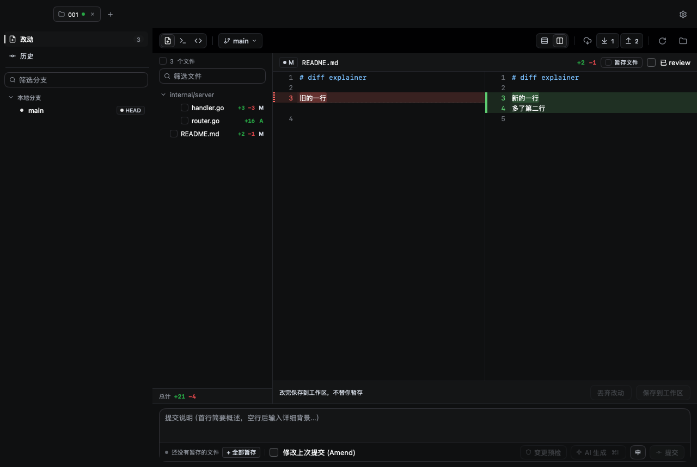
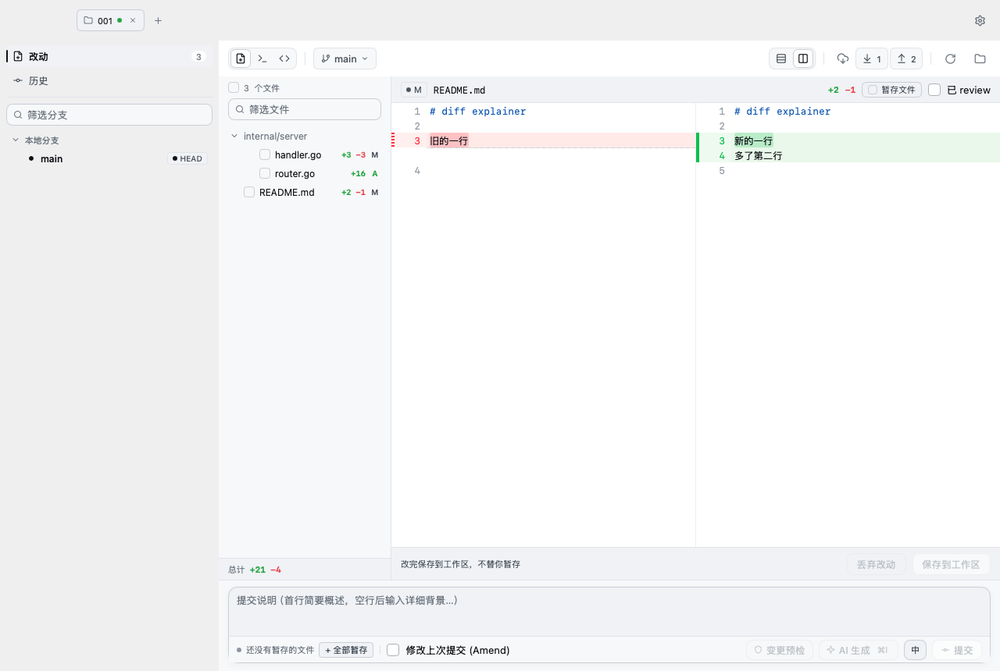
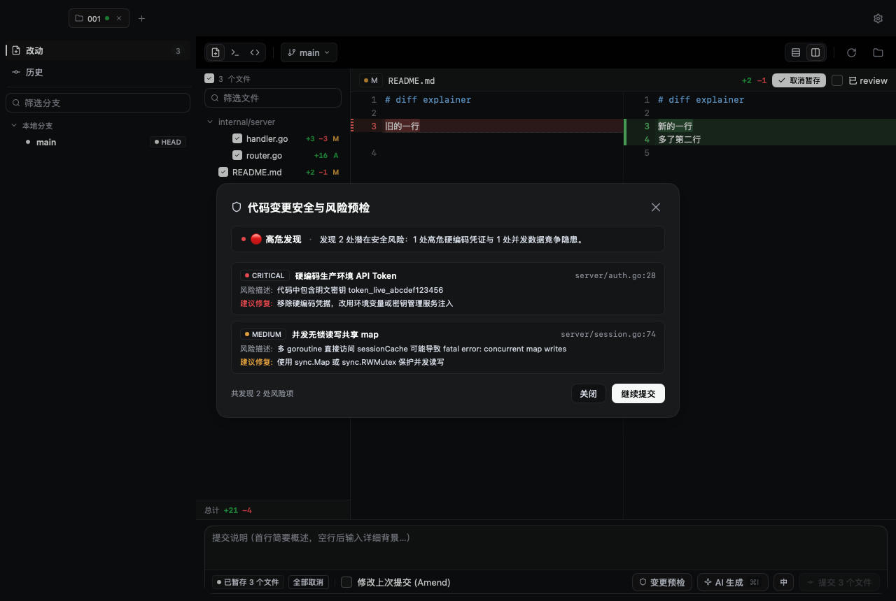
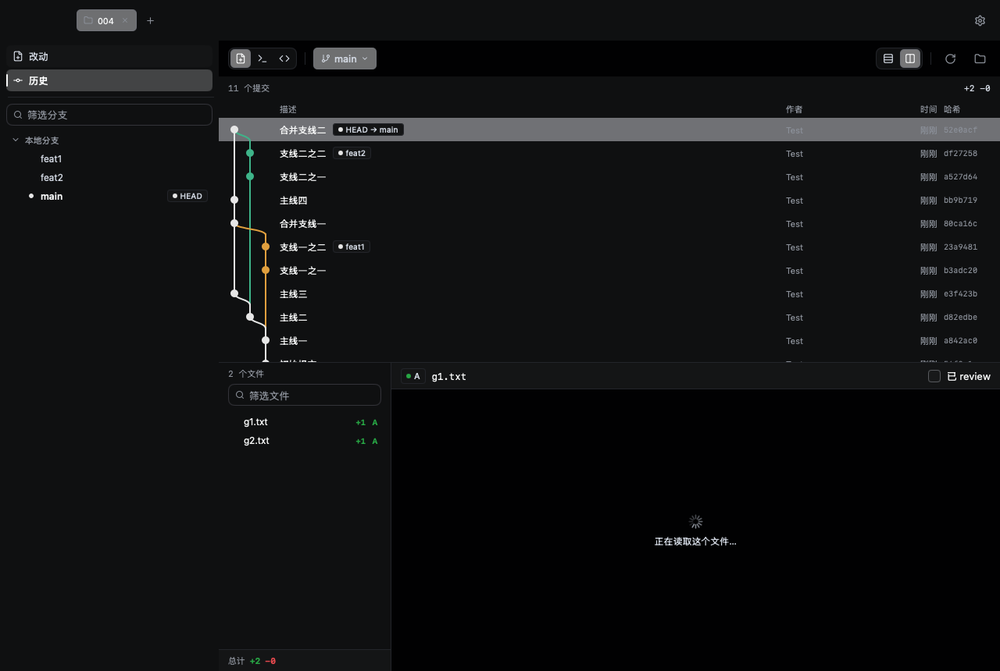
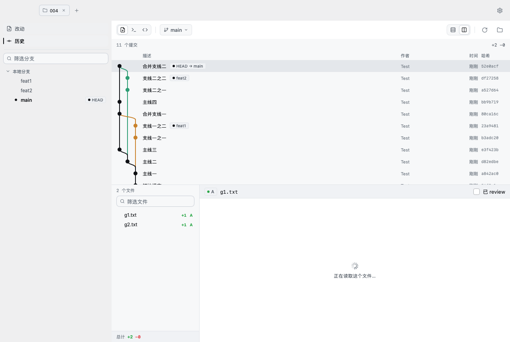
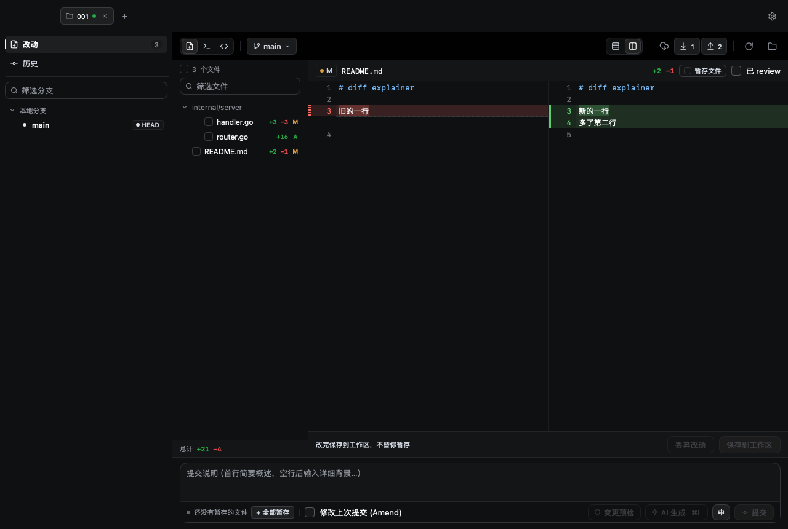
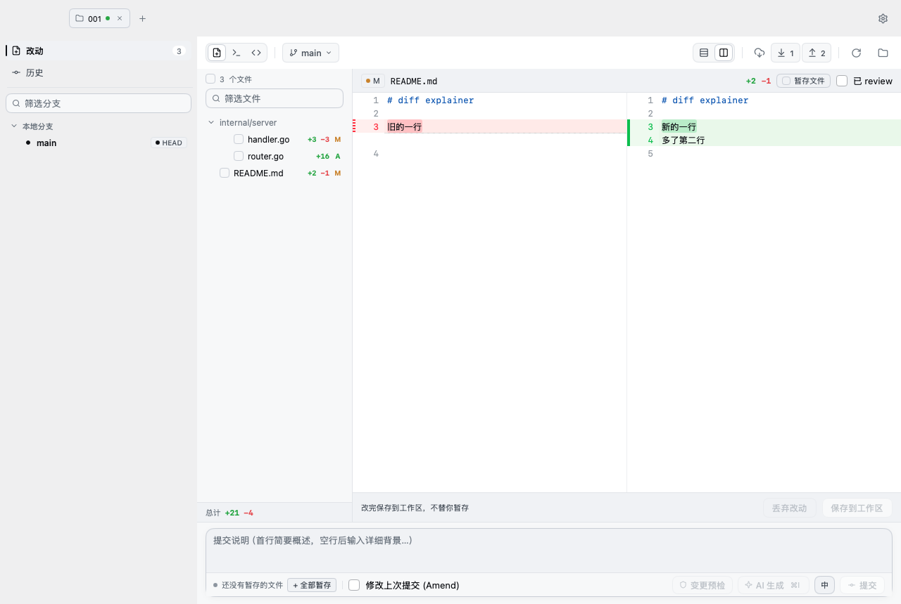
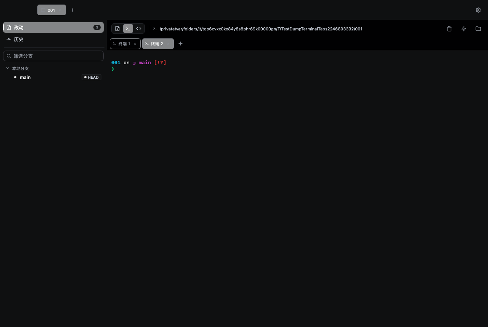
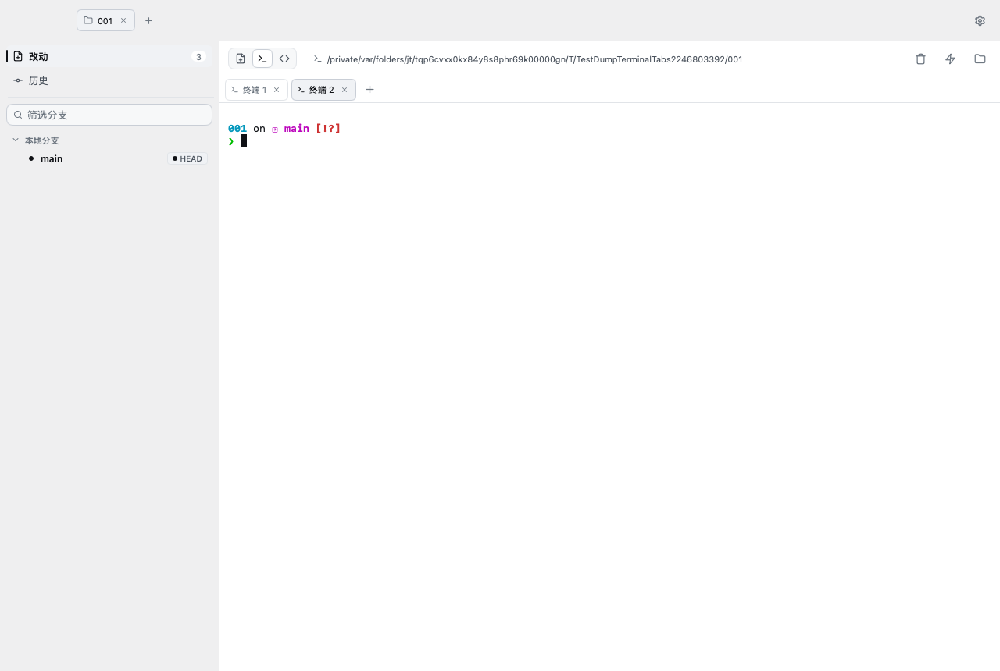

纯 Go 编写。
GPU 直出渲染。
专为审查而生。
没有 Chromium，没有 Node.js，没有 400MB 的空载内存。
遵循 Linear 2.0 设计规范的跨平台 Git 客户端。
go install github.com/CarlOpenLab/Gloss@latest


提交前自动风险审计
一键静态扫描暂存区中的代码变动，揪出意外带入的私钥、AWS/OpenAI 凭据、SQL 注入隐患和调试断点。按文件行号精准定位，按严重级别分类展示。

高精度贝塞尔曲线拓扑图
自研贝塞尔分支车道算法，支持经典、鲜艳与全灰度三种调色盘体系。分支合并与分叉路径一目了然，双击分支芯片直接检出。


直连私有大模型
支持 Claude、OpenAI、DeepSeek 及本地 Ollama 实例。API Key 完全保留在本地。深度理解代码差异块（Hunk），一键总结严谨的 Conventional Commits 格式。


多会话终端与全键盘驱动
内置多标签终端，支持 OSC 标题、字体字号自定义、图片粘贴直通 Claude Code。全键盘操作行云流水，已审文件一键标记 Viewed 折叠。


GPU 直接绘制通道
基于纯 Go 与 mygo 底层图形管线，直接调用系统原生 Metal / Direct3D 接口提交图元。没有 DOM 解析和重排重绘，万行历史与大型 Diff 在 60fps 下保持平滑。
无彩色克制视觉规范
继承 Linear 经典的黑白两极系统。界面本身不使用多余杂色，将注意力 100% 留给 Git 变动的语义增减与分支车道。
~35MB 极轻常驻开销
启动约 80 毫秒，待机内存约为 Electron 类工具的十分之一。整天常驻后台处理庞大 Monorepo，也不会成为系统的资源黑洞。
| 指标 | Gloss | Electron / WebView |
|---|---|---|
| 技术栈 | Pure Go + GPU Direct | Chromium + Node.js |
| 冷启动时间 | ~80 ms | 1,800 ~ 3,200 ms |
| 静默待机内存 | ~35 MB | 280 MB ~ 550 MB |
| 二进制包体积 | ~20 MB | 130 MB ~ 240 MB |
| AI 与网络依赖 | 本地优先 / 直连自有模型 | 多数需要云端登录 |
go install github.com/CarlOpenLab/Gloss@latest